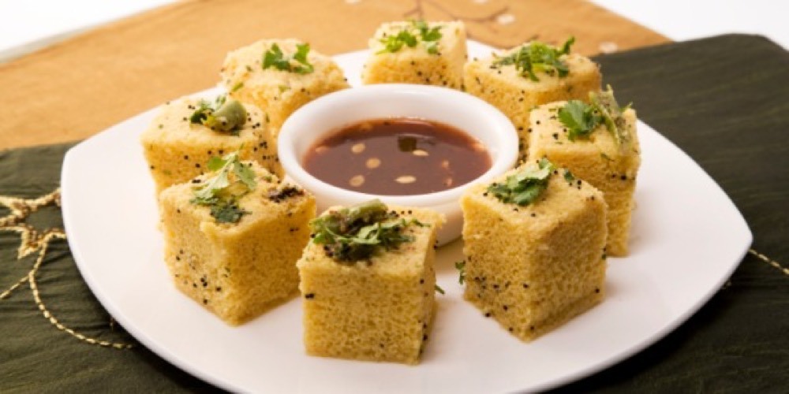

Contains: milk, gluten, sesame, mustard
Checked against the ingredient list for ten allergens: milk, egg, fish, crustaceans, tree nuts, peanuts, sesame, mustard, soy and gluten. Brands vary, so read the label on anything new to you.
Ingredients
Quantities for 4.
- 1.5 cups Besan
- 2 tbsp Ravaoptional, for structure; omit to keep it gluten-freeoptional
- 1/4 cup Yogurtomit to keep it vegan; use 2 tbsp extra wateroptional
- 1.5 tsp Enoadded last, off the heat
- 1 tbsp, grated Ginger
- 2, minced Green Chilli
- 1/4 tsp Turmeric
- 1 Lemon
- 3 tbsp Sugar
- 1 tsp Mustard Seeds
- 1 tsp Sesameoptional
- 1 sprig Curry Leavesoptional
- a pinch Asafoetidaoptional
- to finish Coriander Leavesoptional
- 3 tbsp Neutral Oil
- 1 tsp Salt
Cookware
stovetop, steamer
Before you start
- Everything must be ready before the Eno goes in. It starts releasing gas immediately and the batter has to reach the steam within about thirty seconds or the dhokla will be dense.
- Have the steamer already at a rolling boil and the tin greased before you begin mixing.
- The tempering is poured over the cooked dhokla with a little water in it. That water is what keeps the squares moist.
Method
- Set a steamer to boil and grease a shallow tin. Whisk the besan, rava, yogurt, turmeric, ginger, chilli, salt, 1 tbsp oil and about 3/4 cup water into a smooth, thick-but-pourable batter. Rest 10 minutes.
- Stir in the juice of half a lemon. Add the Eno, whisk briskly for 20 seconds as it foams and visibly lightens, and pour immediately into the tin.Do not beat it after this point; you will knock the air back out.
- Steam covered on high for 15-18 minutes, until a skewer comes out clean and the surface springs back. Cool 10 minutes, then cut into squares.
- For the tempering, heat the remaining oil, splutter the mustard seeds, add the sesame, curry leaves, asafoetida and any remaining slit chillies.
- Take the pan off the heat and carefully add 1/3 cup water, the sugar and the remaining lemon juice. Return to the heat and simmer just until the sugar dissolves.
- Spoon the warm tempering evenly over the dhokla and leave it 15 minutes to soak in fully. Scatter with coriander before serving.
Storage
Best the day it is made. Keeps 2 days refrigerated in a sealed box; revive by steaming 3-4 minutes, which restores the softness. Do not microwave uncovered, it goes rubbery.
Nutrition Good estimate
Low protein: 10 g a serving, 12% of the calories
| Per serving91 g | Per 100 g | |
|---|---|---|
| Calories | 318 kcal | 352 kcal |
| Protein | 9.7 g | 11 g |
| Carbohydrate | 39.0 g | 43 g |
| of which sugars | 15.9 g | 18 g |
| Fibre | 4.4 g | 5 g |
| Fat | 13.9 g | 15 g |
| of which saturated | 1.7 g | 2 g |
| of which unsaturated | 11.1 g | 12 g |
Ingredients given to taste count as zero, so the real figures run a little higher. Nearest database match used for curry leaves. Estimated from raw ingredients using USDA FoodData Central.
Times, yields, allergens and nutrition are guidance. Use your own judgement on doneness and on storing. More in About.